Villager motion comparison
Every image matches an actual passed device execution. Pinned original reports preserve other-device failures and retries; a failed aggregate report is never relabeled passed. Zero-test steps do not qualify.
Eight magnified source-native poses: idle, walk, carry, gather, work, rest, socialize and turn. Open the disposable visual lab → People motion. The shared retained figure also follows planner-validated exterior routes; active production gates work and outward wood props, with an empty return.
These are provisional procedural figures, not registered realistic sprite atlases or accepted character art. The magnified pose examples are independent of economy/workers; ordinary rendering, saves and R2-07 are unchanged. No gate/bridge routes or physical FPS/battery certificate is claimed. Phone remains33073e9.
Onboarding · Atmosphere · Software evidence · Ledger
Recorded provisional people motion
Untrimmed simulator QA entry, walking/carrying/gathering/work and a static hold. Upright orientation-only watch-copy; no physical performance or realistic-atlas acceptance. Recording provenance
Phone
villager pose idlevillager pose walk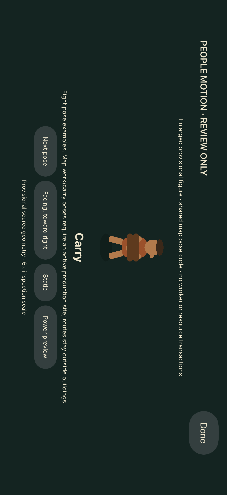
villager pose carry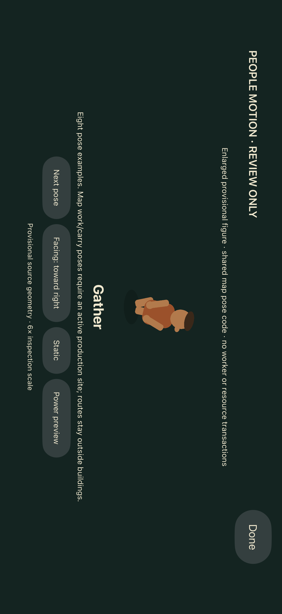
villager pose gather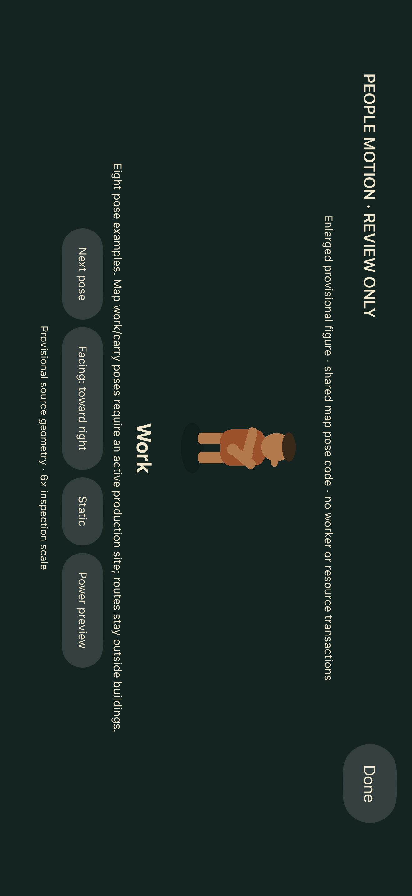
villager pose workvillager pose rest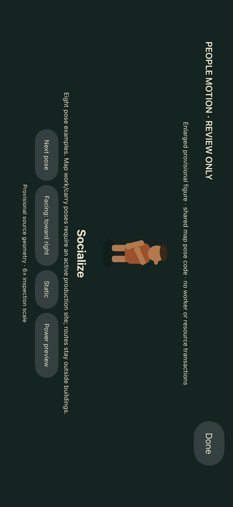
villager pose socialize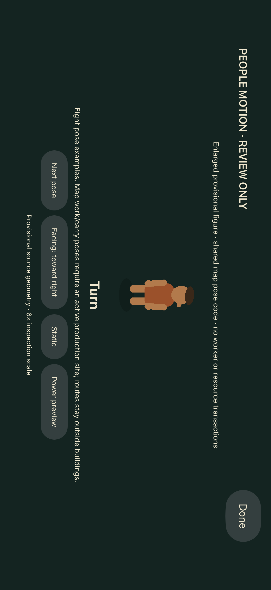
villager pose turnMini
villager pose idle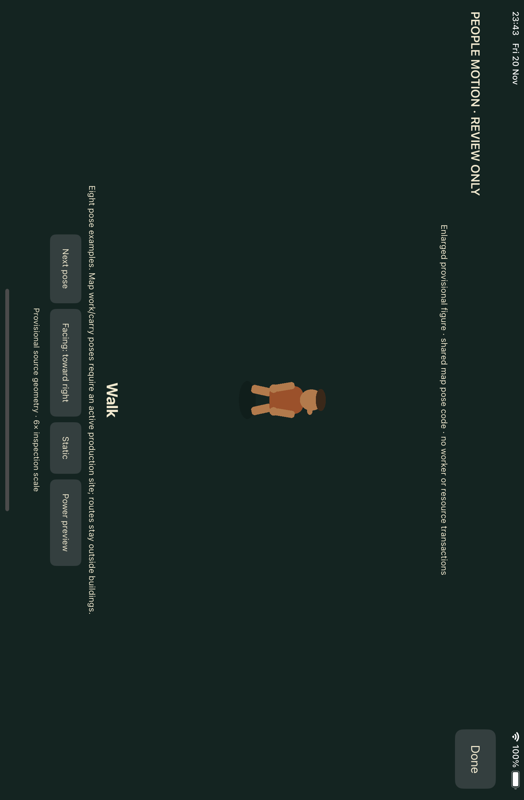
villager pose walkvillager pose carry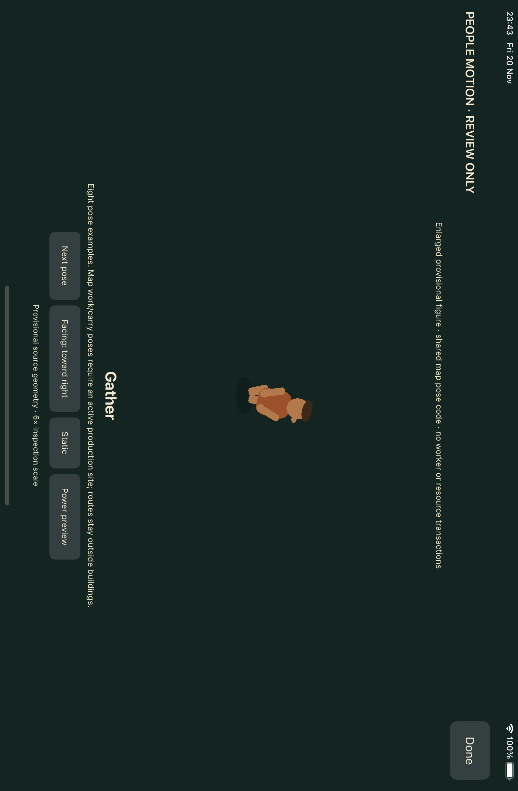
villager pose gathervillager pose work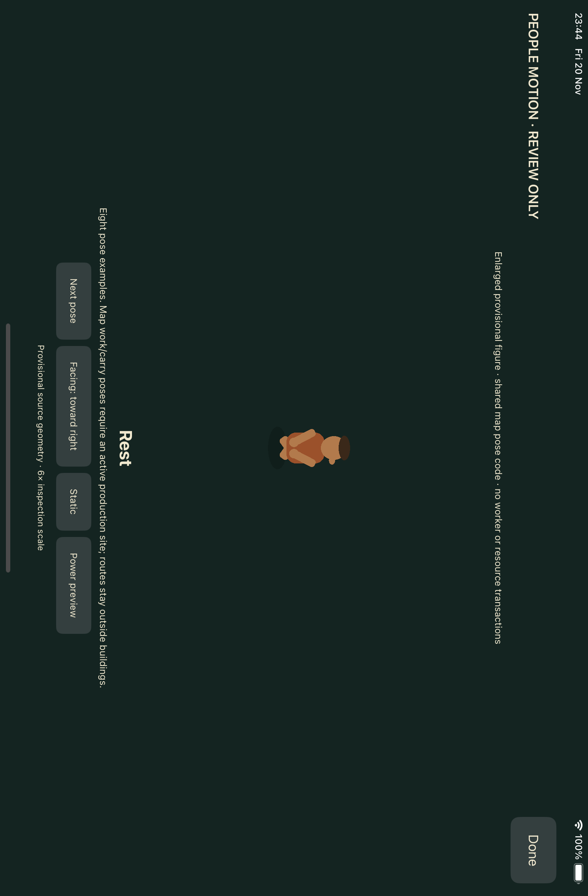
villager pose rest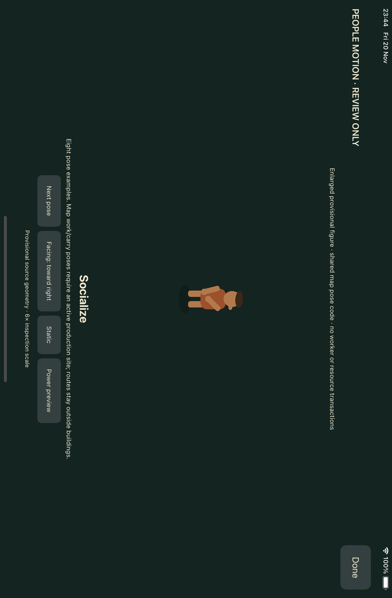
villager pose socialize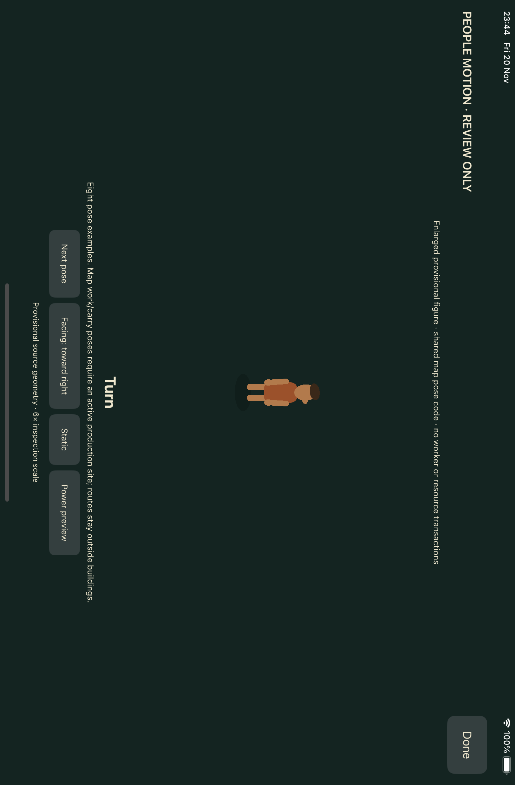
villager pose turnPro
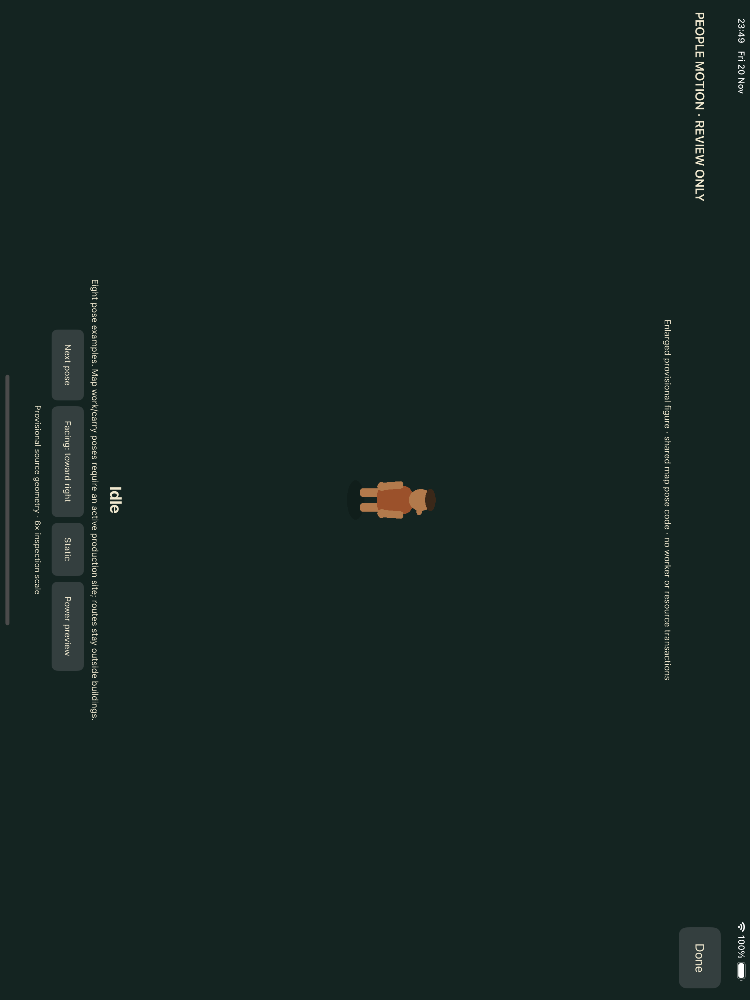
villager pose idle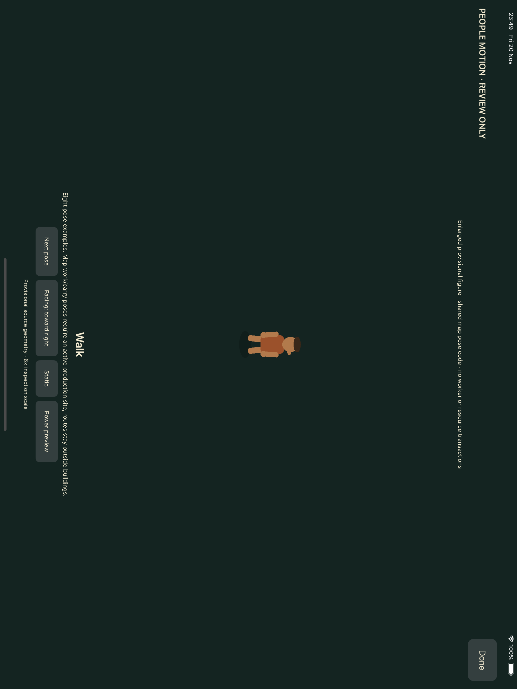
villager pose walkvillager pose carry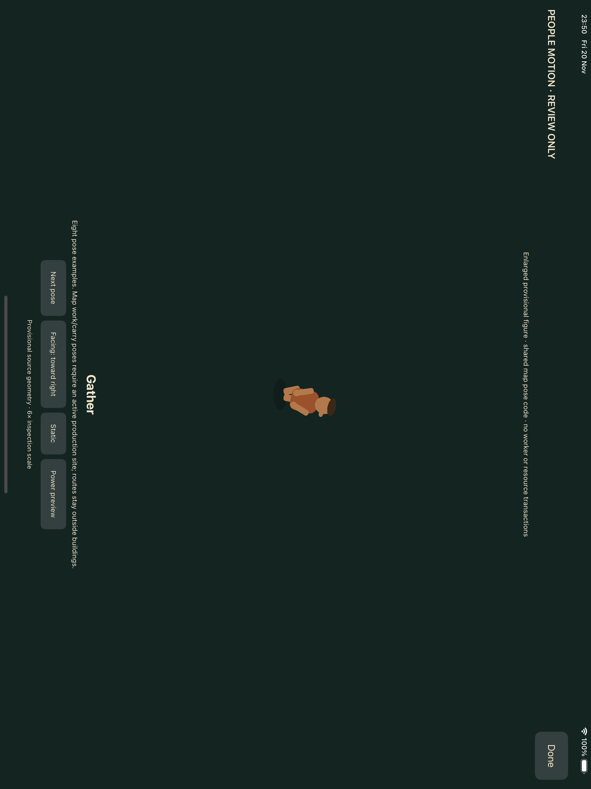
villager pose gathervillager pose work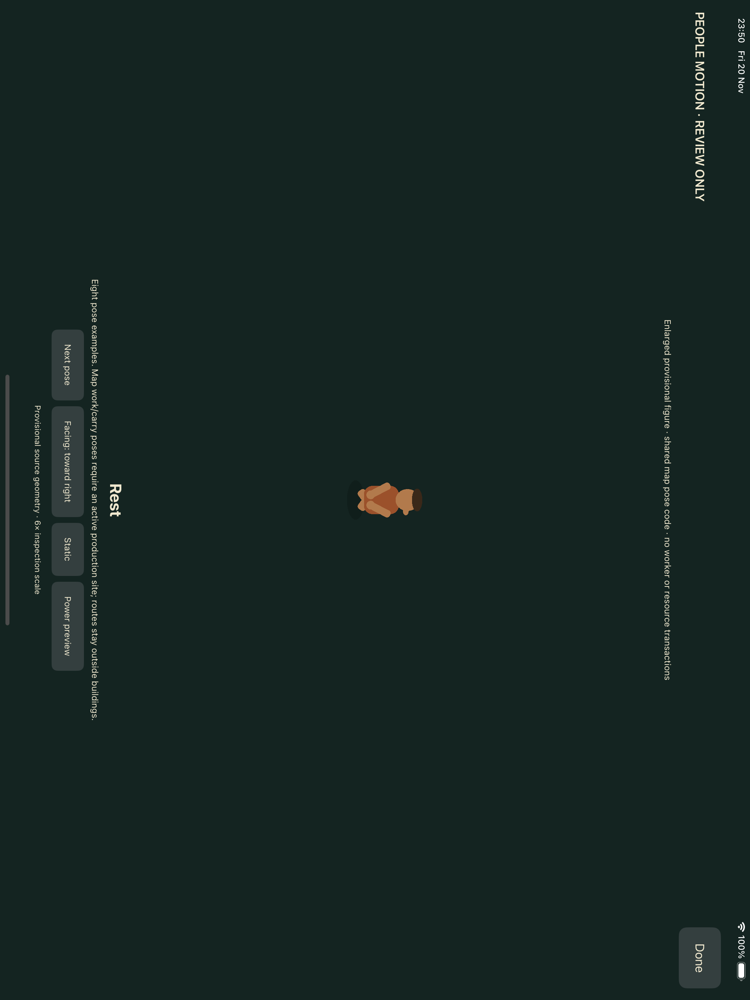
villager pose rest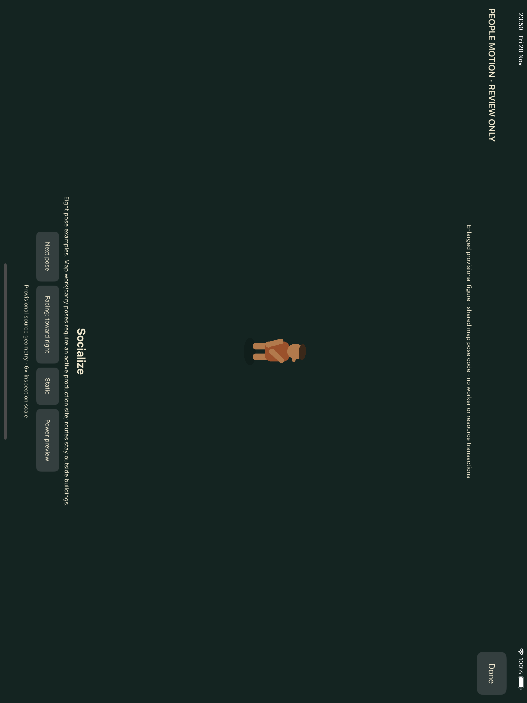
villager pose socializevillager pose turnCharacter and wildlife concepts — unregistered frames, no runtime export
 villagers-review-v1
villagers-review-v1 wildlife-review-v1
wildlife-review-v1 villagers-review-v2
villagers-review-v2 wildlife-review-v2
wildlife-review-v2